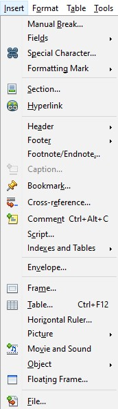
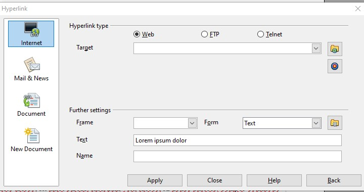
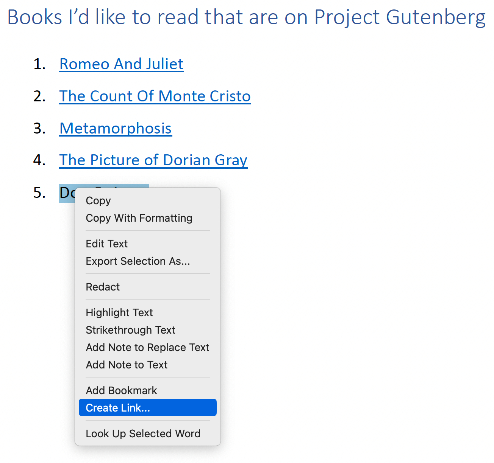
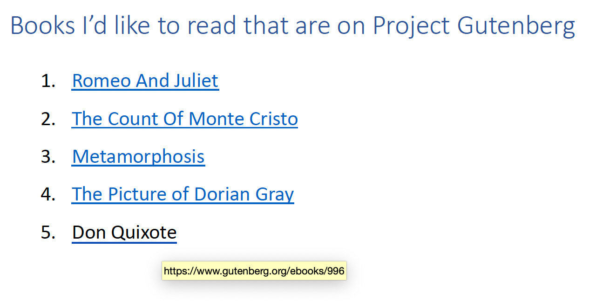

Technique PDF11:Providing links and link text using the Link annotation and the /Link structure element in PDF documents
Applicability
PDF documents that contain links
This technique is not referenced from any Understanding document.
Description
The purpose of this technique is to show how link text in PDF documents can be marked up to be recognizable by keyboard and assistive technology users. That is, the link information is programmatically available to user agents so that links are recognizable when presented in a different format. This is typically accomplished by using a tool for authoring PDF.
Links in PDF documents are represented by a Link tag and objects in its sub-tree, consisting of a link object reference (or Link annotation) and one or more text objects. The text object or objects inside the Link tag are used by assistive technologies to provide a name for the link.
The simplest way to provide links that comply with the WCAG success criteria is to create them when authoring the document, before conversion to PDF.
However, in some cases, it may not be possible to create the links using the original authoring tool. In these cases, Adobe Acrobat Pro can be used to create the link. But, because the tooltip created using the Link dialog in Adobe Acrobat Pro is not accessible to screen readers, be sure that the link text or the link context makes the purpose clear.
In all cases, link purpose should be made clear as described in the general techniques:
Examples
Example 1: Creating a hyperlink in Microsoft Word before conversion to PDF
This example is shown with Microsoft Word. There are other software tools that perform similar functions.
To create a hyperlink in Microsoft Word:
- In the document, highlight the text that you want to use for the link;
- Open the Insert Hyperlink dialog by either:
- selecting the Insert menu option, followed by the Hyperlink option; or
- using the CTRL+K keyboard shortcut.
- On the Insert Hyperlink dialog, enter the link destination.
Example 2: Creating a hyperlink in OpenOffice Writer before conversion to PDF
This example is shown with OpenOffice Writer. There are other software tools that perform similar functions.
- Select the text that will have the hyperlink added.
- On the Insert menu, select Hyperlink.

- In the Hyperlink dialog, insert the target URI in the Target field under Hyperlink Type.
- The text that will have the hyperlink added to can also be changed or added to in
the hyperlink dialog.

- To save the file as tagged PDF, select Save As from the File menu and select the Tagged PDF checkbox.
Example 3: Creating a hyperlink using the Create Link dialog in Adobe Acrobat Pro
This example is shown with Adobe Acrobat Pro. There are other software tools that perform similar functions.
- Select the text that will become the link text.
- Access the context menu and select Create Link.

- Follow the instructions in the Create Link dialog to specify the link appearance.
- Then select Next and specify the URL. The following image shows the resulting hyperlink and tooltip.

This example is shown in operation in the working example of creating a hyperlink in a PDF.
Example 4: Marking up link text using a /Link structure element
Link annotations in PDF documents are associated with a geometric region of a page rather than a particular object in a content stream. For this reason, link annotations alone are not useful for users with visual impairments, or to applications that must determine which content can be activated to invoke a hypertext link.
Tagged PDF /Link elements use PDF's logical structure to establish
the association between content items and link annotations, providing
functionality comparable to HTML hypertext links.
In HTML, the following example produces text containing a hypertext link:
<p>Here is some text <a href="https://www.w3.org/WAI/">with a link</a> inside.</p>In PDF the page must be painted first and then a link annotation placed over the area where the object action will occur.
The following code fragment shows PDF equivalent to the HTML above; it uses link text displayed in blue and underlined. A second code fragment follows, indicating the associated logical structure hierarchy. This is typically accomplished by an authoring tool.
/P <</MCID 0>> %Marked Content Sequence 0 (paragraph)
BDC %Begin marked content sequence
BT %Begin text object
/F1 11.04 Tf %set text font and size
1 0 0 1 72.024 709.54 Tm %set text matrix
0 g %set non stroking color to black
0 G %set stroke color to black
[(H)3(ere )-4(is s)10(o)5(m)-4(e)9( t)-3(e)9(xt)-3( )] TJ %Show text preceding the link" Here is some text"
ET %end text object
EMC %end marked content sequence
/Span <</MCID 1>> %Marked Content Sequence 1 (underlined link text)
BDC %Begin marked content sequence
BT %Begin text object
1 0 0 1 152.42 709.54 Tm %set text matrix
0 0 1 rg %set non-stroking color to blue
0 0 1 RG %set stroke color to blue
[(with a )-2(li)3(n)14(k)] TJ %Show link text " with a link"
ET %end text object
0 0 1 rg %set stroke color to blue
152.42 707.62 45.984 0.72 re %rectangle operator - target area for the link
f* %fill the path using the even-odd rule
EMC %end marked content sequence
/P <</MCID 2>> %Marked Content Sequence 2 (paragraph)
BDC %Begin marked content sequence
BT %begin text object
1 0 0 1 198.41 709.54 Tm %set text matrix
0 g %set non stroking color to black
0 G %set stroke color to black
[( )] TJ %empty text string showing white space
ET %end text object
BT %begin text object
1 0 0 1 200.93 709.54 Tm %set text matrix
[(in)5(sid)5(e.)] TJ %show text following the link "inside."
ET %end text
BT %begin text object
1 0 0 1 229.97 709.54 Tm %set text matrix
[( )] TJ %empty text string showing white space
ET %end text object
EMC %end marked content sequence
The following code fragment is an excerpt from the logical structure that establishes the association between the content items and the link annotation:
11 0 obj %Object ID 11, generation 0, obj keyword
<</K[1 %immediate child of the structure tree root
<<
/Obj 26 0 R %reference to Object 26
/Type/OBJR %this object describes an indirect object reference
>>]
/P 12 0 R
/Pg 17 0 R
/S/Link
>>
endobj
26 0 obj %object ID 26 which is referenced by the OBJR in Object 11
<</A 31 0 R
/BS
<</S/S
/Type/Border
/W 0
>>
/Border[0 0 0] %a colorless border
/H/I
/Rect[150.128 694.558 200.551 720.0] %the boundaries defining target area where link annotation is active
/StructParent 1
/Type/Annot %Structure element is an annotation
/Subtype/Link
>> %It is a link annotation
endobj
31 0 obj %Object 31, gen 0, obj
<</S/URI %Object type is URI action
/URI(https://www.w3.org/WAI) %The Uniform resource identifier to resolve
>>
endobjOther sources
No endorsement implied.
- Section 14.8.4.4.2 (Linked Elements) in PDF 1.7 (ISO 32000-1) (PDF)
- Create and verify PDF accessibility (Acrobat Pro)
Tests
Procedure
For each hyperlink, verify that the link is correctly tagged and the link text is properly exposed:
- Read the PDF document with a screen reader, listening to hear that the link is read correctly and that it describes the purpose of the link (i.e., its destination).
- Visually scan the tag tree to verify that the link is tagged correctly and the link text is exposed (for screen magnifier users and sighted users with cognitive disabilities).
- Use a tool that is capable of showing the /Link entry value to open the PDF document and view the hyperlink and link text.
- Use a tool that exposes the document through the accessibility API and verify that the link has the correct link text.
- Tab to each link and check that it can be followed to its target by pressing Enter.
Expected Results
- #1 or #2 or #3 or #4 is true.
- #5 is true.